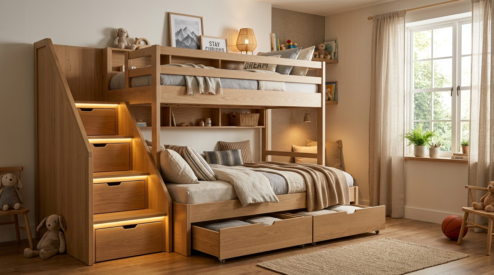
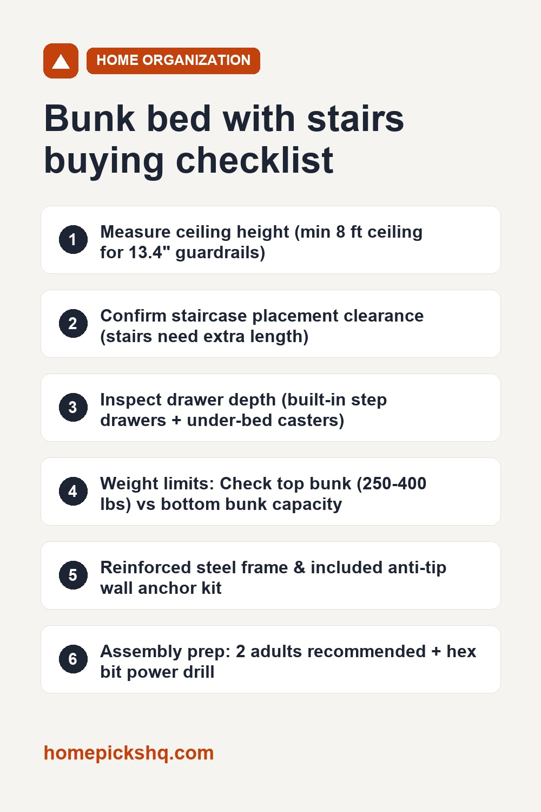

BTHFST Bunk Bed with Stairs & Storage: Specs, Safety, and Real-World Room Fit

How we write these guides: we analyze manufacturer blueprints, structural engineering specifications, customer installation feedback, and standard home safety codes. We do not claim to have lab-tested every product. Links to Amazon on this page are affiliate links; see our disclosure.
If you have two kids sharing a bedroom, host frequent sleepovers, or manage a vacation rental where every square foot counts, standard bunk beds solve only half the problem. While they double your sleeping capacity, a standalone dresser, nightstands, and charging cords quickly turn tight quarters into clutter. The BTHFST Bunk Bed takes an all-in-one approach: wide non-slip staircase steps with integrated storage drawers, rolling under-bed bins, a built-in power strip, and customizable ambient LED lighting. Below is our comprehensive evaluation of its footprint, safety benchmarks, assembly demands, and whether it can truly eliminate a bedroom dresser.
BTHFST Bunk Bed with Staircase, Storage Drawers & Built-In LED Strips
| Bed Type | Bunk bed with integrated walk-up storage staircase |
|---|---|
| Storage Units | 3 deep staircase step drawers + 2 under-bed rolling drawers on casters |
| Climbing Access | Wide flat step staircase with handrails (safer than vertical metal rungs) |
| Frame Construction | Heavy-duty alloy steel structure with engineered rustic wood accent panels |
| Power & Ports | Integrated charging hub (2 AC outlets + USB & Type-C ports) |
| Smart Lighting | Multi-color RGB LED strip with app remote & music synchronization |
| Guardrail Height | 13.4-inch full-length safety guardrails on top bunk |
| Mattress Support | Reinforced steel slats with center support beam (no box spring needed) |
| Recommended Mattress | 6" to 8" thickness for top bunk; 8" to 10" for bottom bunk |
| Weight Limit | Heavy-duty rating (up to 400 lbs top / 450 lbs bottom) |
Pros
- Walk-up staircase: Significantly safer and more comfortable than climbing narrow vertical rungs barefoot in the dark.
- Built-in dresser alternative: 3 deep staircase drawers plus 2 massive under-bed rollout bins hold clothes, toys, and spare bedding.
- Integrated power station: Keeps phone, tablet, and lamp cords contained safely in one spot without dangerous extension cords.
- No box spring cost: Heavy-gauge metal slats provide solid mattress support directly.
- Reversible layout: Can be configured to place stairs on the left or right to suit room door clearance.
Cons
- Extended length footprint: Staircase adds approximately 16 to 20 inches to overall bed length compared to a straight-ladder bunk.
- Multi-box delivery: Arrives in 2 or 3 heavy shipping packages that may arrive on separate days.
- Labor-intensive assembly: Requires 3 to 4 hours of meticulous assembly and two adults.
- Top bunk age restriction: Federal safety rules strictly advise against children under 6 years old on upper bunks.
Check price on Amazon Price and availability change often. As an Amazon Associate I earn from qualifying purchases.
Stairs vs. Ladders: Why This Design Wins for Real Families
Traditional bunk beds use vertical or angled ladders with narrow tubular metal rungs. For an active child climbing up at 3:00 PM, a ladder is easy. But for a sleepy kid descending at 2:00 AM to use the bathroom, or a parent climbing up to change bed sheets, narrow ladder rungs are uncomfortable and present a noticeable slipping hazard.
A staircase provides broad, flat footing that children can navigate confidently with a dedicated handrail. More importantly, conventional ladders waste the entire vertical column of air around them. The BTHFST design turns every individual stair rise into an enclosed pull-out storage drawer, reclaiming valuable cubic feet of bedroom storage.
Can It Truly Replace a Bedroom Dresser?
In a standard 10x11 foot kid’s bedroom, a 6-drawer horizontal dresser occupies roughly 50 inches of wall width and protrudes 18 to 20 inches into the walkway. When you factor in the clearance needed to pull drawers all the way open, a dresser devours nearly 15 square feet of usable floor area.
The BTHFST combines two distinct storage zones:
- Staircase Drawers: Perfect for folded everyday clothes, socks, underwear, or homework supplies that need quick daily access.
- Under-Bed Rolling Drawers: Mounted on smooth multidirectional caster wheels, these oversized drawers slide out from underneath the bottom bunk. They easily accommodate bulky seasonal clothing, extra winter blankets, pillows, or large toy bins.
For most shared siblings’ rooms, this combined capacity allows you to skip a standalone dresser entirely, freeing up room for study desks or open play space.
Measuring Your Room: The 3 Critical Clearances
Before ordering any staircase bunk bed, take out a tape measure and verify these three essential clearances:
- Total Length Clearance: Standard bunk beds measure approximately 78 to 80 inches long. Because of the walking incline, staircase bunk beds typically measure 92 to 96 inches in total length. Ensure you have at least 24 inches of clear walking path between the base of the stairs and any adjacent wall or doorway.
- Ceiling Height & Fan Clearance: You need a minimum 8-foot (96-inch) ceiling. For an upper sleeper to sit upright comfortably without bumping their head, you want at least 30 to 33 inches of clearance between the top of the upper mattress and the ceiling plaster. Keep the upper bed frame at least 3 to 4 feet away from the sweep radius of any ceiling fan blades.
- Under-Bed Drawer Pull-Out Space: Check that there is at least 22 inches of open floor in front of the lower bunk frame so the rolling under-bed drawers can glide out smoothly without colliding with nightstands or rugs.
Mattress Thickness & Top Rail Safety
One of the most overlooked bunk bed hazards is buying an overly thick luxury pillow-top mattress for the upper bunk. Federal safety standards (ASTM F1427 and CPSC 16 CFR Part 1213/1513) mandate that the top edge of the guardrail must be at least 5 inches above the top surface of the mattress to prevent accidental rolling during sleep.
The BTHFST features generous 13.4-inch high safety guardrails. To maintain the mandatory 5-inch safety buffer, select a top mattress with a maximum thickness of 6 to 8 inches. A medium-firm memory foam or hybrid mattress in the 6" to 8" range gives excellent support while keeping the perimeter barrier high and protective. On the lower bunk, you can safely use an 8" to 10" mattress since it has open headroom.
Electronics & Smart LED Lighting Safety
The built-in power charging strip is equipped with standard AC outlets along with USB and Type-C fast-charging ports. While this eliminates cords running across the carpet where people can trip, smart home safety rules apply:
- Never run charging cords underneath blankets, duvets, or mattresses where heat can become trapped.
- Plug only lower-draw electronics into the frame hub (phone chargers, study lamps, audio players). High-draw appliances like space heaters or blow dryers should always plug directly into dedicated wall outlets.
- Take advantage of the LED app timer feature to set bedtime lighting modes that automatically dim to warm amber or power off overnight.
Assembly Strategy: What to Expect on Delivery Day
Because of its robust steel reinforcement and engineered wood panels, this bed has significant total shipping weight. Here is how to make assembly stress-free:
- Stage the parts: Unbox the cartons in the target bedroom rather than trying to carry a fully assembled unit through tight hallways or staircases.
- Use a power drill: The hardware kit includes standard manual Allen hex wrenches, but using a cordless drill or electric screwdriver with a matching 4mm hex bit will cut your assembly time in half.
- Leave bolts finger-tight initially: Assemble the main structural frame with bolts loosely fastened so you have play to align screw holes. Once all support beams and staircase cross-members are seated, go back and tighten everything down securely.
- Install the wall anchors: Never skip the included anti-tip wall brackets. Fastening the bed frame to two wall studs guarantees zero wobble, virtually eliminates squeaks, and protects climbing children.
Quick Bunk Bed Buying Checklist
- Ceiling height is at least 8 feet with clearance from ceiling fan blades
- Room accommodates 92–96 inches of length for the walk-up staircase
- At least 24 inches of clear walking pathway at the base of the stairs
- Top mattress thickness is strictly limited to 6–8 inches for 5"+ guardrail buffer
- Frame includes anti-tip wall anchoring hardware for stud attachment
- Two adults and a cordless drill with hex bits available for assembly
Check price on Amazon Use the checklist above to verify room dimensions. As an Amazon Associate I earn from qualifying purchases.

Free 2026 Home & Kitchen Checklist Pack
Download our printable 1-page buyer checklists for every major room and appliance—dimensions, wattage guide, and common pitfalls to avoid before you order.
Frequently Asked Questions
Are mattresses or box springs included?
No mattresses are included with the frame. However, you do not need to buy box springs because the frame features a reinforced heavy-duty metal slat system that directly supports standard mattresses with proper airflow.
How thick should the top bunk mattress be for safety?
Under US CPSC and ASTM bunk bed safety standards, the top of the guardrail must sit at least 5 inches above the top surface of the mattress. With 13.4-inch safety guardrails, a mattress thickness of 6 to 8 inches provides optimal fall protection.
Can the staircase be installed on either side of the bed?
Yes, the BTHFST design supports reversible orientation during assembly so you can mount the staircase on either the left or right side to match your bedroom door, closet, and window layout.
How many boxes does it ship in and how long does assembly take?
This high-capacity bed ships in multiple heavy cartons to prevent shipping damage. Two adults should budget 3 to 4 hours for assembly using a cordless drill with hex bits alongside the included hand tools.